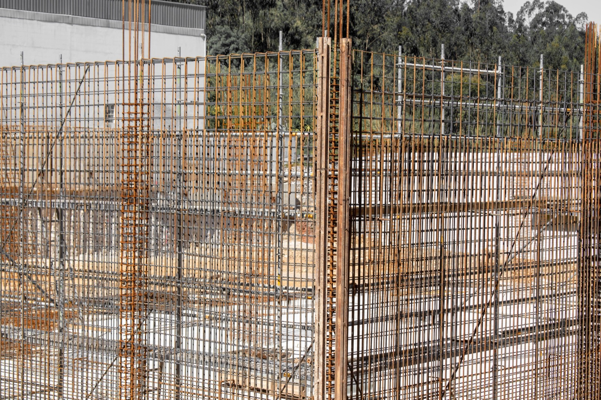

ICF (Insulated Concrete Forms)
Interlocking foam blocks filled with reinforced concrete, arguably the best all-round method for a hot, stormy, seismic climate. Costs, trade-offs, and the tropical case.

ICF stacks hollow interlocking foam blocks like giant Lego, adds rebar, and fills the cavity with concrete. You end up with a reinforced concrete wall sandwiched in permanent insulation, which, in a hot, hurricane-and-earthquake climate, is close to ideal.
How it comes together
Expanded-polystyrene forms interlock into walls, rebar is placed inside, and concrete is poured to create a continuous monolithic structure. The foam stays as permanent insulation on both faces. It's fast (forms go up quickly), and the finished wall is quiet, airtight, and extremely strong.
What it runs
Roughly $1,300–2,000/m² ($120–190/sqft), typically 5–10% more than conventional block or wood-frame upfront, paid back through dramatically lower cooling bills and near-zero storm/pest/fire losses over time. (Approximate; region-dependent.)
The good and the bad
| Factor | Rating | Notes |
|---|---|---|
| Cost | 🟡 | ~5–10% over block upfront; cheaper to run |
| Lifespan | 🟢 | Concrete core; decades |
| Build speed | 🟢 | Forms stack fast |
| DIY-friendly | 🟡 | Doable but concrete pour needs a crew |
| Heat/climate fit | 🟢 | Insulated concrete = cool interiors, low AC |
| Moisture/termite | 🟢 | Concrete + foam resist both (detail the foam) |
| Seismic/wind | 🟢 | Excellent, monolithic reinforced concrete |
| Permitting/finance | 🟢 | Concrete; codes and banks are comfortable |
Will it hold up in Panama or Costa Rica?
Absolutely, this is one of the best-fit alternative methods for the tropics, and a natural upgrade path from the region's reinforced-concrete-block default. It delivers the storm and earthquake resistance the tropics demand, plus the insulation that block walls lack (cooler interiors, lower AC bills, no mold-friendly thermal bridging). For SORA, ICF is the closest alternative method to what we already do best.
Thinking about building in Panama or Costa Rica?
SORA is a fixed-price design-build platform for foreign buyers. We build in reinforced concrete by default, and we can talk you through when an alternative method actually makes sense for the tropics. Play with cost live in the 3D configurator.
See real 2026 build costs →Frequently asked questions
Is ICF more expensive than concrete block?
Usually about 5–10% more upfront, but it typically pays that back through much lower air-conditioning bills (the walls are insulated) and near-zero losses to storms, pests, and fire over the building's life.
Is ICF good for hot climates?
Very, the concrete core provides thermal mass and the permanent foam provides insulation, so interiors stay cooler and steadier with far less air conditioning than an uninsulated block house.
How does ICF handle hurricanes and earthquakes?
Excellently. A monolithic reinforced-concrete wall is one of the strongest residential wall systems available, standing up to hurricane-force wind and performing well in seismic zones when properly engineered.
Sources & verification
Figures in this guide were checked against primary and authoritative sources on 27 July 2026. Immigration, tax, and cost figures change — always confirm the current rules with the official body or a licensed professional before acting.
- Infurnia — green construction materials incl. ICF
- MN Property Group — construction methods trends